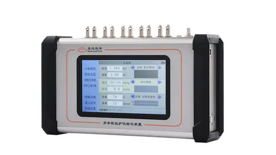
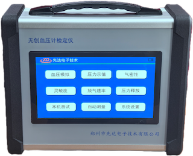

XDDC203 Patient Simulator
Multi-parameter patient monitor · ECG, NIBP, SpO₂, respiration
All-in-one simulation · 10 pre-installed SpO₂ R-curves
Details →Since 1999 · 27 years in medical test equipment Since 1999 · medical test equipment
Portable simulators and calibrators for biomedical engineering, hospitals, and calibration labs.

Three portable simulators for everyday patient monitor testing
Multi-parameter patient monitor · ECG, NIBP, SpO₂, respiration
All-in-one simulation · 10 pre-installed SpO₂ R-curves
Details →
ECG machine · EEG · patient monitor ECG channel
Handheld · 7″ touchscreen · battery powered
Details →
NIBP module · automatic blood pressure monitor
Dynamic NIBP and static pressure testing
Details →Focused hardware for teams who test patient monitors every day
Touchscreen workflows, preset sequences, and clear on-screen parameters—similar to what HTM professionals expect from leading patient simulators.
XDDC203 generates ECG, NIBP, and SpO₂ at the same time so you verify three monitor functions in one connection, not three separate setups.
Rechargeable batteries, carrying cases, and compact housings support routine PM in clinical settings and off-site calibration work.